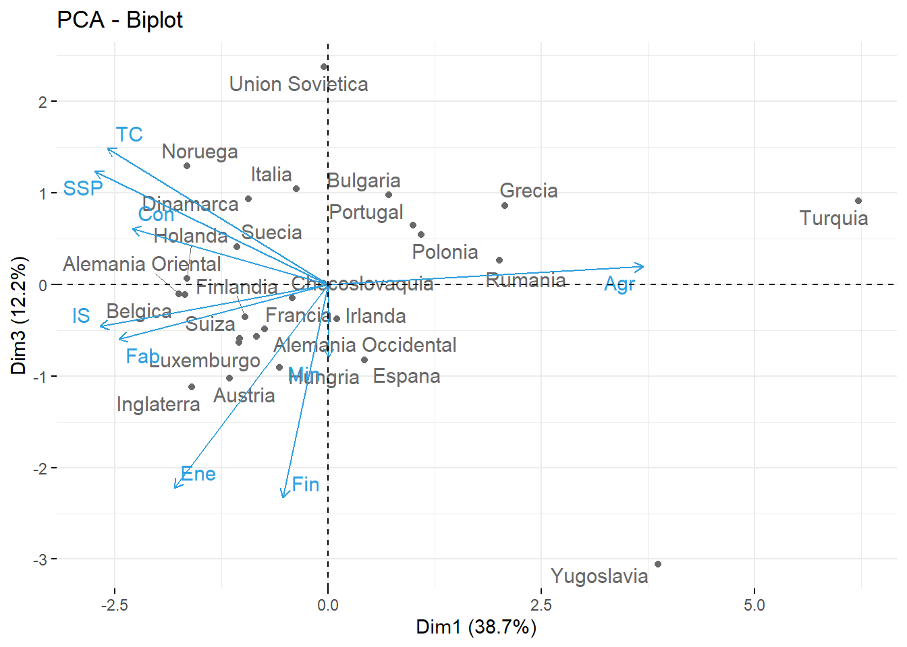
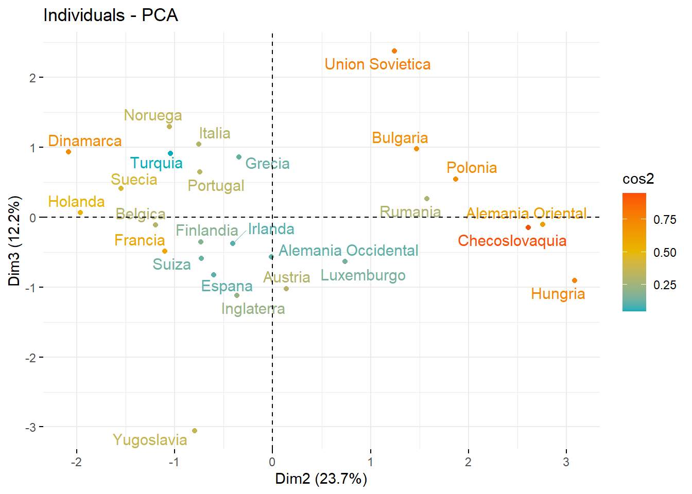
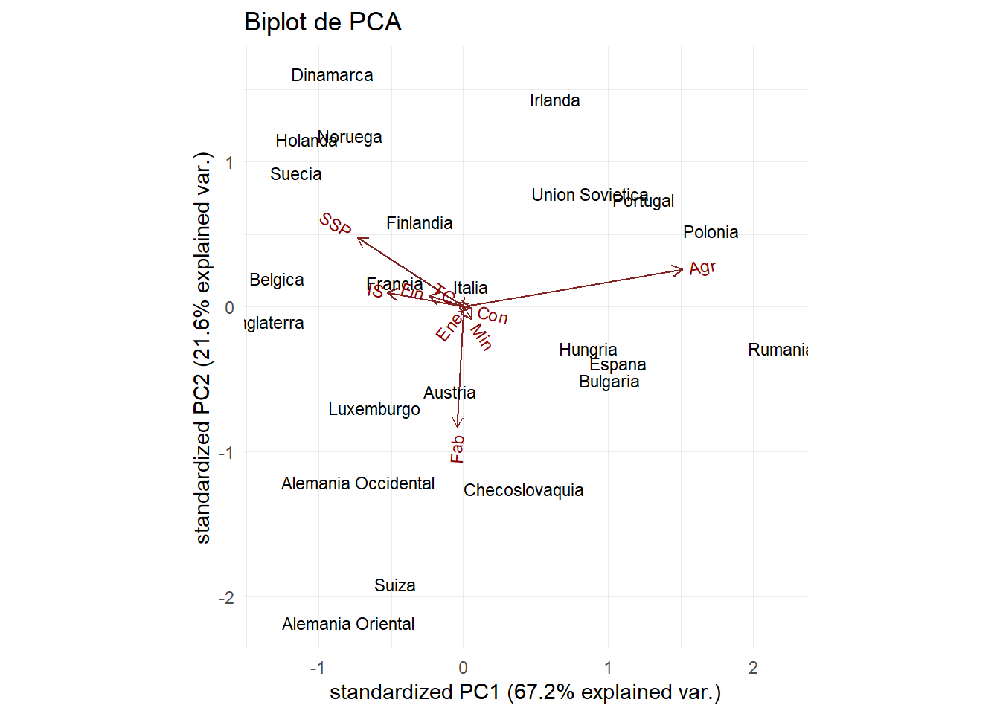

Entrega 5
Considera los datos “europa.dat” que están disponibles en Aula Digital. Los datos corresponden a los porcentajes de población empleados en diferentes actividades económicas en Europa para el año 1979. Las variables consideradas son:
Agricultura, Minas, Fábricas, Suministro Eléctrico, Construcción, Industrias de Servicio, Finanzas, Servicios Sociales y Personales y, Transporte y Comunicaciones.
Utiliza el método de componentes principales para reducir el número de variables, y tratar de determinar grupos de países con comportamientos semejantes en la distribución de su fuerza de trabajo. En este caso, usa la matriz de covarianza para el cálculo de las componentes principales, ya que todos los datos están medidos en la misma escala (porcentaje de la población) y por las caractersticas de los datos, no parece una buena idea considerarlos todos de igual manera.
En primer lugar procedemos a cargar nuestros datos:
Agr Min Fab Ene Con IS Fin SSP TC
Belgica 3.3 0.9 27.6 0.9 8.2 19.1 6.2 26.6 7.2
Dinamarca 9.2 0.1 21.8 0.6 8.3 14.6 6.5 32.2 7.1
Francia 10.8 0.8 27.5 0.9 8.9 16.8 6.0 22.6 5.7
Alemania Occidental 6.7 1.3 35.8 0.9 7.3 14.4 5.0 22.3 6.1
Irlanda 23.2 1.0 20.7 1.3 7.5 16.8 2.8 20.8 6.1
Italia 15.9 0.6 27.6 0.5 10.0 18.1 1.6 20.1 5.7
Luxemburgo 7.7 3.1 30.8 0.8 9.2 18.5 4.6 19.2 6.2
Holanda 6.3 0.1 22.5 1.0 9.9 18.0 6.8 28.5 6.8
Inglaterra 2.7 1.4 30.2 1.4 6.9 16.9 5.7 28.3 6.4
Austria 12.7 1.1 30.2 1.4 9.0 16.8 4.9 16.8 7.0
Finlandia 13.0 0.4 25.9 1.3 7.4 14.7 5.5 24.3 7.6
Grecia 41.4 0.6 17.6 0.6 8.1 11.5 2.4 11.0 6.7
Noruega 9.0 0.5 22.4 0.8 8.6 16.9 4.7 27.6 9.4
Portugal 27.8 0.3 24.5 0.6 8.4 13.3 2.7 16.7 5.7
Espana 22.9 0.8 28.5 0.7 11.5 9.7 8.5 11.8 5.5
Suecia 6.1 0.4 25.9 0.8 7.2 14.4 6.0 32.4 6.8
Suiza 7.7 0.2 37.8 0.8 9.5 17.5 5.3 15.4 5.7
Turquia 66.8 0.7 7.9 0.1 2.8 5.2 1.1 11.9 3.2
Bulgaria 23.6 1.9 32.3 0.6 7.9 8.0 0.7 18.2 6.7
Checoslovaquia 16.5 2.9 35.5 1.2 8.7 9.2 0.9 17.9 7.0
Alemania Oriental 4.2 2.9 41.2 1.3 7.6 11.2 1.2 22.1 8.4
Hungria 21.7 3.1 29.6 1.9 8.2 9.4 0.9 17.2 8.0
Polonia 31.1 2.5 25.7 0.9 8.4 7.5 0.9 16.1 6.9
Rumania 34.7 2.1 30.1 0.6 8.7 5.9 1.3 11.7 5.0
Union Sovietica 23.7 1.4 25.8 0.6 9.2 6.1 0.5 23.6 9.3
Yugoslavia 48.7 1.5 16.8 1.1 4.9 6.4 11.3 5.3 4.0Lo primero que hacemos es revisar si las variables están correlacionadas, requisito necesario para obtener una representación más simple de éstas.
Agr Min Fab Ene Con IS
Agr 1.00000000 0.03579884 -0.6710976 -0.40005113 -0.53832522 -0.7369805
Min 0.03579884 1.00000000 0.4451960 0.40545524 -0.02559781 -0.3965646
Fab -0.67109759 0.44519601 1.0000000 0.38534593 0.49447949 0.2038263
Ene -0.40005113 0.40545524 0.3853459 1.00000000 0.05988883 0.2019066
Con -0.53832522 -0.02559781 0.4944795 0.05988883 1.00000000 0.3560216
IS -0.73698054 -0.39656456 0.2038263 0.20190661 0.35602160 1.0000000
Fin -0.21983645 -0.44268311 -0.1558288 0.10986158 0.01628255 0.3655553
SSP -0.74679001 -0.28101212 0.1541714 0.13241132 0.15824309 0.5721728
TC -0.56492047 0.15662892 0.3506925 0.37523116 0.38766214 0.1875543
Fin SSP TC
Agr -0.21983645 -0.7467900 -0.5649205
Min -0.44268311 -0.2810121 0.1566289
Fab -0.15582884 0.1541714 0.3506925
Ene 0.10986158 0.1324113 0.3752312
Con 0.01628255 0.1582431 0.3876621
IS 0.36555529 0.5721728 0.1875543
Fin 1.00000000 0.1076403 -0.2459257
SSP 0.10764028 1.0000000 0.5678669
TC -0.24592567 0.5678669 1.0000000A continuación, nos urge decidir si estandarizamos o no los datos. Para ello optaremos por ver si existen grandes diferencias en las varianzas muestrales de nuestras variables. En caso afirmativo, optaremos por estandarizar los datos, con el fin de evitar que la mayoría de la variabilidad total la acapare una única componente principal, pudiendo sesgar así nuestro análisis.
Varianza % Varianza total
Agr 241.70 64.97
Min 0.94 0.25
Fab 49.11 13.20
Ene 0.14 0.04
Con 2.71 0.73
IS 20.93 5.63
Fin 7.88 2.12
SSP 46.64 12.54
TC 1.94 0.52Como consecuencia de haber obtenido un componente que agrupa la mayoría de la varianza total optaremos por normalizar los datos. Se construye el modelo ACP de correlación a partir de la siguiente función:
Standard deviations (1, .., p=9):
[1] 1.867391569 1.459511268 1.048311791 0.997237674 0.737033056 0.619215363
[7] 0.475135828 0.369851221 0.006754636
Rotation (n x k) = (9 x 9):
PC1 PC2 PC3 PC4 PC5 PC6
Agr 0.523790989 0.05359389 0.04867439 -0.02879285 0.2127026 0.1533066
Min 0.001323458 0.61780714 -0.20110021 -0.06408495 -0.1637431 -0.1005897
Fab -0.347495131 0.35505360 -0.15046308 0.34608821 -0.3849576 -0.2881523
Ene -0.255716182 0.26109606 -0.56108325 -0.39330897 0.2951715 0.3572641
Con -0.325179319 0.05128845 0.15332114 0.66832395 0.4715934 0.1303542
IS -0.378919663 -0.35017206 -0.11509551 0.05015651 -0.2835681 0.6148287
Fin -0.074373583 -0.45369785 -0.58736130 0.05156652 0.2795682 -0.5255581
SSP -0.387408806 -0.22152120 0.31190350 -0.41223019 -0.2203514 -0.2629097
TC -0.366822713 0.20259185 0.37510601 -0.31437188 0.5129356 -0.1239760
PC7 PC8 PC9
Agr 0.02132116 0.007922069 0.80641788
Min -0.72571894 0.088362816 0.04856307
Fab 0.47936298 0.125818308 0.36595728
Ene 0.25564699 -0.341228167 0.01938500
Con -0.22069499 -0.355733906 0.08257219
IS -0.22943536 0.387536806 0.23829861
Fin -0.18745525 0.174329338 0.14517064
SSP -0.19130212 -0.506154178 0.35094226
TC 0.06819331 0.544562381 0.07205520Los valores propios muestran el porcentaje de varianza explicada por cada componente principal.
eigenvalue variance.percent cumulative.variance.percent
Dim.1 3.4871512725 3.874613e+01 38.74613
Dim.2 2.1301731410 2.366859e+01 62.41472
Dim.3 1.0989576113 1.221064e+01 74.62536
Dim.4 0.9944829778 1.104981e+01 85.67517
Dim.5 0.5432177255 6.035753e+00 91.71092
Dim.6 0.3834276658 4.260307e+00 95.97123
Dim.7 0.2257540553 2.508378e+00 98.47960
Dim.8 0.1367899257 1.519888e+00 99.99949
Dim.9 0.0000456251 5.069456e-04 100.00000Un método alternativo para determinar el número de componentes principales es observar el diagrama de valores propios ordenados de mayor a menor. El número de componentes se determina en el punto, más allá del cual los valores propios restantes son todos relativamente pequeños y de tamaño comparable.

Se puede ver que con las 2 primeras componentes nos permiten representar más del 60% de la variabilidad total, mientras que si incluyéramos una tercera componente podríamos alcanzar prácticamente un nivel del 75%. A partir de la cuarta, quinta y siguientes componentes el grado de aportación (en términos de variabilidad) disminuye. No compensará tomar 4 o más componentes principales porque el tamaño del problema se incrementa en exceso por apurar un 10% o 15% más de variabilidad total representada. La cuestión que abordaremos a continuación es si es mejor tomar 2 o 3 componentes principales.
Para decidir sobre este aspecto pasaremos a ver los grados de aportación de cada variable para cada una de las componentes principales.
PC1 PC2 PC3 PC4 PC5 PC6 PC7 PC8 PC9
Agr 0.524 0.054 0.049 -0.029 0.213 0.153 0.021 0.008 0.806
Min 0.001 0.618 -0.201 -0.064 -0.164 -0.101 -0.726 0.088 0.049
Fab -0.347 0.355 -0.150 0.346 -0.385 -0.288 0.479 0.126 0.366
Ene -0.256 0.261 -0.561 -0.393 0.295 0.357 0.256 -0.341 0.019
Con -0.325 0.051 0.153 0.668 0.472 0.130 -0.221 -0.356 0.083
IS -0.379 -0.350 -0.115 0.050 -0.284 0.615 -0.229 0.388 0.238
Fin -0.074 -0.454 -0.587 0.052 0.280 -0.526 -0.187 0.174 0.145
SSP -0.387 -0.222 0.312 -0.412 -0.220 -0.263 -0.191 -0.506 0.351
TC -0.367 0.203 0.375 -0.314 0.513 -0.124 0.068 0.545 0.072Podemos ver que la primera componente principal otorga un peso mayor a la actividad de la agricultura, seguido de las actividades relacionadas con servicios sociales y personales, industrias y servicios, transportes y comunicaciones, fábrica y contrucción. Si pasamos a estudiar la segunda de las componentes nos percatamos de que minería y finanzas, ninguna de ellas representada por la primera, son las que actividades que adquieren más peso. Por último, la tercera componente nos serviría para tener una mejor representación de los datos para la variable suministro eléctrico (no especialmente bien representada por las componentes anteriores) y el sector de las finanzas, que mejora la explicación con respecto a la componente anterior.
Procedemos ahora a realizar los cruces de las distintas componentes principales.
PC1 PC2 PC3 PC4 PC5 PC6
Agr 0.523790989 0.05359389 0.04867439 -0.02879285 0.2127026 0.1533066
Min 0.001323458 0.61780714 -0.20110021 -0.06408495 -0.1637431 -0.1005897
Fab -0.347495131 0.35505360 -0.15046308 0.34608821 -0.3849576 -0.2881523
Ene -0.255716182 0.26109606 -0.56108325 -0.39330897 0.2951715 0.3572641
Con -0.325179319 0.05128845 0.15332114 0.66832395 0.4715934 0.1303542
IS -0.378919663 -0.35017206 -0.11509551 0.05015651 -0.2835681 0.6148287
Fin -0.074373583 -0.45369785 -0.58736130 0.05156652 0.2795682 -0.5255581
SSP -0.387408806 -0.22152120 0.31190350 -0.41223019 -0.2203514 -0.2629097
TC -0.366822713 0.20259185 0.37510601 -0.31437188 0.5129356 -0.1239760
PC7 PC8 PC9
Agr 0.02132116 0.007922069 0.80641788
Min -0.72571894 0.088362816 0.04856307
Fab 0.47936298 0.125818308 0.36595728
Ene 0.25564699 -0.341228167 0.01938500
Con -0.22069499 -0.355733906 0.08257219
IS -0.22943536 0.387536806 0.23829861
Fin -0.18745525 0.174329338 0.14517064
SSP -0.19130212 -0.506154178 0.35094226
TC 0.06819331 0.544562381 0.07205520Cruce D1 vs D2:
Tenemos dos tipos de gráficas que podemos hacer:
- Círculo de Correlación Variable:
En este gráfico se agrupan las variables que tengan correlación positiva. Si acudimos a la matriz de correlación veremos que, por ejemplo, agricultura mantiene correlación negativa con todas las demás variables (y por ello está en la mitad derecha de la circunferencia).




—————————————————————————-
2ª Propuesta:
Creo que lo anterior no es correcto. Si os fijáis en el enunciado pone que se tiene que usar el PCA de covarianzas, no el de correlaciones. Con esta función “princomp()” puedes especificar si quieres usar la matriz de correlaciones (corr = TRUE) o la matriz de covarianzas (cor=FALSE) y los resultados en el caso de usar la matriz de covarianzas (LA QUE PIDE EL ENUNCIADO) coinciden con los de la función que hemos intentado usar antes pero para “scale = FALSE”.
Propongo proceder así, en vernos podemos discutirlo más en detalle:
Call:
princomp(x = europa[, 1:9], cor = FALSE)
Standard deviations:
Comp.1 Comp.2 Comp.3 Comp.4 Comp.5 Comp.6
17.08176356 6.48234700 3.82393204 2.32861792 1.53278255 1.00289626
Comp.7 Comp.8 Comp.9
0.63612956 0.24985891 0.04287707
9 variables and 26 observations.- Hacemos un summary y vemos cuáles son los valores propios, la varianza explicada por cada componente y la varianza acumulada.
El problema (o no, no lo sé del todo) con la variabilidad acumulada es que prácticamente toda la acumula la primera componente principal y que con únicamente extenderla a 2 componentes principales ya abarcamos másdel 90% de la variabilidad, lo que en teoría debería de ser bueno.
Lo que pasa es que creo que hay ciertos outliers que hacen que se vayan de madre los números y que realmente deberíamos quizás de excluir esos países y hacer el análisis sin tenerlos en cuenta (Turquía, Yugoslavia, los vimos en el análisis incorrecto que intentamos hacer al principio, de eso sí que podemos fiarnos).
Importance of components:
Comp.1 Comp.2 Comp.3 Comp.4 Comp.5
Standard deviation 17.0817636 6.4823470 3.82393204 2.32861792 1.532782553
Proportion of Variance 0.8157836 0.1174827 0.04088179 0.01516024 0.006568567
Cumulative Proportion 0.8157836 0.9332663 0.97414811 0.98930835 0.995876918
Comp.6 Comp.7 Comp.8 Comp.9
Standard deviation 1.002896265 0.63612956 0.2498589145 4.287707e-02
Proportion of Variance 0.002812041 0.00113136 0.0001745417 5.139960e-06
Cumulative Proportion 0.998688959 0.99982032 0.9999948600 1.000000e+00Podemos complementar de forma más visual la aportación de variabilidad que refleja cada una de las componentes con un gráfico. Esto debería de sugerirnos cuántos componentes retener.

- Examinar las cargas de los componentes principales para entender cómo cada variable original contribuye a cada componente. Esto nos debería de ser de ayuda para interpretar el significado de los componentes.
Loadings:
Comp.1 Comp.2 Comp.3 Comp.4 Comp.5 Comp.6 Comp.7 Comp.8 Comp.9
Agr 0.892 0.118 0.180 0.153 0.335
Min -0.456 -0.766 0.290 0.324
Fab -0.271 -0.770 0.185 0.336 0.201 0.162 0.337
Ene -0.231 -0.909 0.340
Con -0.724 0.558 -0.194 0.325
IS -0.192 0.234 -0.580 0.608 0.266 0.104 0.337
Fin 0.130 -0.470 -0.781 0.121 0.123 0.334
SSP -0.298 0.567 0.598 0.236 0.248 0.332
TC 0.159 -0.435 -0.546 0.567 0.224 0.334
Comp.1 Comp.2 Comp.3 Comp.4 Comp.5 Comp.6 Comp.7 Comp.8 Comp.9
SS loadings 1.000 1.000 1.000 1.000 1.000 1.000 1.000 1.000 1.000
Proportion Var 0.111 0.111 0.111 0.111 0.111 0.111 0.111 0.111 0.111
Cumulative Var 0.111 0.222 0.333 0.444 0.556 0.667 0.778 0.889 1.000- Hacer un biplot para visualizar simultáneamente las cargas y los scores de los componentes principales. Básicamente hacer el gráfico redondito con el círculo.
Esto debería de proporcionar una visión clara de cómo se relacionan las variables y los países en el espacio de las CP1 y CP2

Análisis de los Scores: Revisa los scores de los componentes principales para ver cómo cada observación (país) se posiciona en los componentes principales seleccionados. Esto es útil para identificar patrones o agrupaciones.
Comp.1 Comp.2 Comp.3 Comp.4 Comp.5
Belgica -17.516687 4.9262285 -2.3552809 0.1940007 0.4907275
Dinamarca -11.496688 11.6617664 3.0020283 -2.5328564 -0.2620503
Francia -9.128686 2.1682821 -2.7503057 -0.1289183 0.3735587
Alemania Occidental -14.393424 -5.0474938 0.2056895 -1.2143729 2.5785719
Irlanda 4.458174 6.1315650 -1.9240008 3.4809060 0.3480591
Italia -4.026684 0.3888953 -2.4058619 4.8100625 -0.2469394
Comp.6 Comp.7 Comp.8 Comp.9
Belgica -0.5872563 0.02747862 0.26151251 -0.008040795
Dinamarca 1.0001427 -0.16185051 0.11322147 0.098177832
Francia 0.7406204 -0.44855421 -0.07200325 -0.002822468
Alemania Occidental 0.2612405 0.38250268 0.11444269 -0.043957458
Irlanda -0.5398972 -0.35750610 -0.42087184 0.072290598
Italia 1.5020677 -0.24928213 0.05164591 0.034174567PROPUESTA: eliminar yugoslavia y turquía y ver qué pasa
Call:
princomp(x = europa_sin_tur_yug[, 1:9], cor = FALSE)
Standard deviations:
Comp.1 Comp.2 Comp.3 Comp.4 Comp.5 Comp.6
11.99215911 6.23949949 3.72044014 1.82762070 1.15104298 0.80921073
Comp.7 Comp.8 Comp.9
0.66083404 0.24926119 0.03866755
9 variables and 24 observations.
Loadings:
Comp.1 Comp.2 Comp.3 Comp.4 Comp.5 Comp.6 Comp.7 Comp.8 Comp.9
Agr 0.871 0.152 0.278 0.331
Min 0.135 -0.248 -0.305 -0.780 0.311 0.324
Fab -0.136 -0.831 0.159 0.330 0.162 0.334
Ene -0.248 -0.896 0.349
Con -0.115 -0.237 -0.381 0.810 -0.136 0.326
IS -0.238 0.193 -0.690 0.511 0.192 0.109 0.332
Fin -0.112 0.112 -0.281 -0.794 0.215 -0.282 0.153 0.338
SSP -0.390 0.475 0.605 0.334 0.162 0.327
TC 0.164 -0.637 -0.271 0.567 0.215 0.339
Comp.1 Comp.2 Comp.3 Comp.4 Comp.5 Comp.6 Comp.7 Comp.8 Comp.9
SS loadings 1.000 1.000 1.000 1.000 1.000 1.000 1.000 1.000 1.000
Proportion Var 0.111 0.111 0.111 0.111 0.111 0.111 0.111 0.111 0.111
Cumulative Var 0.111 0.222 0.333 0.444 0.556 0.667 0.778 0.889 1.000